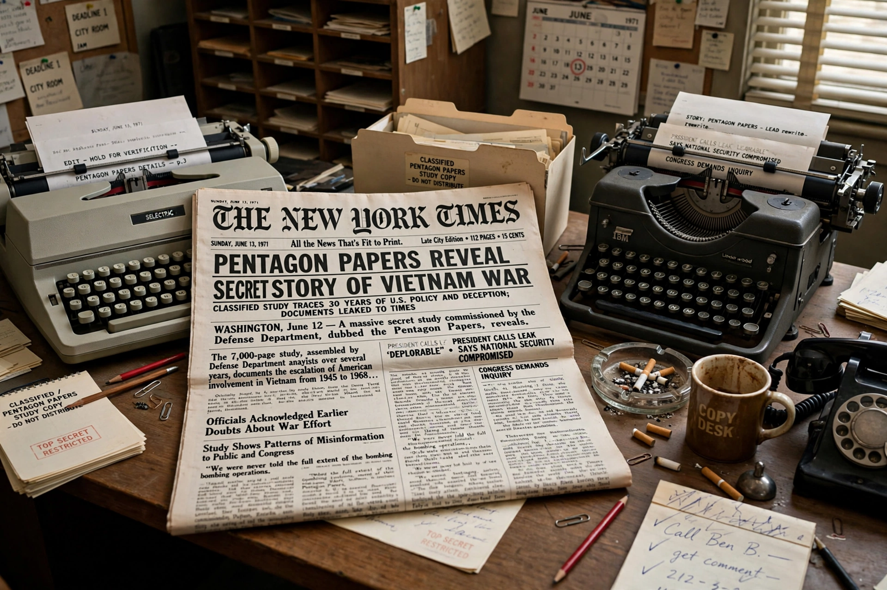

New York Times Co. v. United States

| New York Times Co. v. United States | |
|---|---|
| Citation | 403 U.S. 713 (1971) |
| Argued / decided | 26 June 1971 / 30 June 1971 |
| Question | Whether the government could impose a prior restraint on publication of the Pentagon Papers |
| Holding | 6–3: the government had not met its heavy burden to justify prior restraint |
New York Times Co. v. United States, 403 U.S. 713 (1971), often referred to as the Pentagon Papers case, was a landmark decision of the U.S. Supreme Court on the First Amendment. The ruling made it possible for The New York Times and The Washington Post to publish the then-classified Pentagon Papers without risk of government censorship or punishment.
Background
The Pentagon Papers — formally the History of U.S. Decision-Making in Vietnam, 1945–1968 — were a secret Department of Defense study leaked by military analyst Daniel Ellsberg, who had worked on the study and become convinced the public had been misled about the Vietnam War. After Ellsberg failed to persuade senators to release the documents, he gave copies to Times reporter Neil Sheehan. The Times began publishing excerpts on 13 June 1971. The Nixon administration, asserting national security, obtained a restraining order — the first successful federal prior-restraint action against a newspaper since the doctrine was established in Near v. Minnesota (1931). The Post then began publishing and was likewise enjoined.
Decision
The cases raced to the Supreme Court, which heard argument on 26 June and ruled just four days later. In a brief per curiam opinion, the Court held 6–3 that the government had failed to meet its "heavy burden of showing justification" for a prior restraint on the press. Each justice wrote separately: Justices Black and Douglas argued the First Amendment bars prior restraint absolutely, while others rested on the government's failure of proof — leaving the door theoretically open to restraint in an exceptional case of direct, immediate and irreparable harm.
Significance
The decision is a cornerstone of press freedom in the United States, affirming that the government may almost never stop publication in advance, even of classified material, though it did not resolve whether journalists may be prosecuted after publication. The case was dramatised in the 2017 film The Post.
See also: Freedom of the press · Pentagon Papers · Near v. Minnesota